Справочник по Angular и React · модуль 1 · первый проект и первый бот
1.1
Node.js, npm
и проект на Vite
В этой главе разобрано, зачем для React нужна программа Node.js, если сам React работает в браузере. По шагам установлены Node.js и npm, создан проект на Vite, установлены его зависимости и запущен сервер разработки. Затем разобраны файлы проекта и путь от файла index.html до компонента на экране. Глава заканчивается заготовкой проекта «Доска заявок», с которой работает весь модуль 1.
- Категория
- Рабочее место
- Уровень
- Начальный
- Что понадобится
- Компьютер с интернетом, VS Code, права на установку программ
- Результат
- Проект
zayavkiзапускается командойnpm run devи открывается в браузере
§1Зачем нужен Node.js
Шкаф собирают в мастерской: там стоят станки, лежат инструменты и детали. Покупатель получает готовый шкаф, станки ему не нужны. Если мастер хочет быстро проверить, как дверца будет открываться, он собирает её прямо в мастерской и смотрит.
Мастерская и магазин находятся в разных местах, а здесь и инструменты, и браузер для проверки работают на одном компьютере разработчика.
В главе 0.1 сказано, что браузер выполняет только HTML, CSS и JavaScript. Проект на React пишется на TypeScript и JSX, разбит на десятки файлов и использует чужие библиотеки. Прежде чем браузер покажет такой проект, его нужно превратить в обычные файлы JavaScript и CSS. Эту работу выполняют инструменты разработчика, и почти все они написаны на JavaScript.
Node.js — программа, которая выполняет JavaScript вне браузера, прямо на компьютере. В сравнении с мастерской Node.js — это электричество, от которого работают станки. Node.js запускает инструменты, написанные на JavaScript: менеджер пакетов npm, который скачивает библиотеки, и Vite, который собирает проект и показывает его в браузере.
Где работает Node.js, а где браузер
Node.js нужен только разработчику. Пользователь сайта получает готовые файлы, и у него на компьютере Node.js может не быть.
React в Node.js не запускается: в Node.js работают инструменты, которые готовят проект, а React выполняется в браузере. Поэтому ошибки при установке и запуске (раздел §9) появляются в терминале, а ошибки в коде компонентов — в браузере.
§2Установка Node.js
У Node.js выходит много версий, и для учёбы и работы берут версию с пометкой LTS (Long Term Support — долгосрочная поддержка). Такая версия получает исправления ошибок и уязвимостей около двух с половиной лет, и в ней не появляются изменения, ломающие совместимость. В октябре 2026 года LTS — версия 24; 28 октября 2026 года статус LTS получит версия 26. Vite 8, на котором создаётся проект, требует Node.js не ниже 20.19 или 22.12, поэтому подходит любая из этих версий.
Установщик скачивается с сайта nodejs.org/en/download. Сайт сам определяет систему и подставляет её в строку «Get Node.js for …». В середине страницы показан блок команд для установки через Docker — его нужно пропустить: ниже, в строке «Or get a prebuilt Node.js», находятся кнопки обычного установщика.
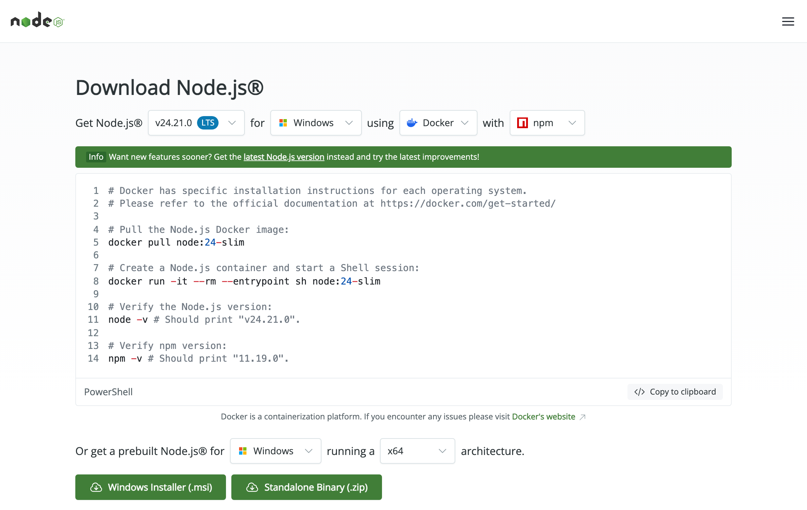
На снимке в первой строке выбраны версия v24.21.0 с пометкой LTS и система Windows. Строка «using Docker» относится только к блоку команд под ней. Кнопка, которая нужна студенту на Windows, — Windows Installer (.msi) в нижней строке; архитектура x64 подходит для большинства компьютеров в классе.
- Скачайте установщик
Нажмите Windows Installer (.msi) и откройте скачанный файл.
- Пройдите окна установщика
Нажмите Next, примите лицензию, оставьте папку
C:\Program Files\nodejs\. В окне Custom Setup ничего не меняйте: компоненты npm и Add to PATH включены по умолчанию. Последний пункт добавляет Node.js в список папок, где терминал ищет программы.Место под кадр с компьютера в классеОкно установщика Node.js на Windows, шаг Custom Setup: в списке компонентов отмечены Node.js runtime, npm package manager и Add to PATH.
- Пропустите дополнительные инструменты
Флажок Automatically install the necessary tools (Tools for Native Modules) оставьте пустым: для проектов дисциплины он не нужен и ставит несколько гигабайт программ.
Место под кадр с компьютера в классеОкно установщика Node.js на Windows, шаг Tools for Native Modules: флажок «Automatically install the necessary tools» снят.
- Завершите установку и перезапустите VS Code
Нажмите Install, затем Finish. Если VS Code был открыт, закройте и откройте его заново: в уже открытом терминале остался прежний список папок с программами (PATH), и новая программа в нём не находится.
- Скачайте установщик
На странице загрузки в нижней строке выбрана система macOS. Нажмите macOS Installer (.pkg).
- Пройдите окна установщика
Откройте файл
.pkg, нажимайте Продолжить, примите лицензию и введите пароль пользователя. Установщик ставитnodeиnpmв папку/usr/local/bin. - Перезапустите VS Code
Если VS Code был открыт, закройте его полностью (⌘Q) и откройте заново: в уже открытом терминале остался прежний список папок с программами (PATH), и новая программа в нём не находится.
- Установите nvm
На Linux Node.js удобнее ставить через nvm — программу, которая хранит несколько версий Node.js и переключает их. Команда установки взята со страницы загрузки nodejs.org:
Терминал curl -o- https://raw.githubusercontent.com/nvm-sh/nvm/v0.40.8/install.sh | bash
- Подключите nvm в открытом терминале
Терминал \. "$HOME/.nvm/nvm.sh"
Точка в начале строки выполняет файл в текущем терминале. В новых терминалах nvm подключится сам.
- Установите Node.js 24
Терминал nvm install 24
Проверка установки
Проверка выполняется в терминале VS Code. Перед ней создаётся папка, в которой будут лежать все проекты дисциплины.
- Создайте папку для проектов
Имя — латиницей, без пробелов:
react-kurs. Это имя будет видно в терминале и в командах.В Проводнике откройте Документы, щёлкните правой кнопкой по пустому месту → Создать → Папку и назовите её
react-kurs. Путь получитсяC:\Users\<ваше имя>\Documents\react-kurs.В Finder откройте папку Документы, нажмите ⇧+⌘+N и назовите новую папку
react-kurs.В домашней папке создайте папку
react-kurs: в файловом менеджере или командойmkdir ~/react-kurs. - Откройте папку в VS Code
Меню File → Open Folder…, выберите
react-kursи нажмите Выбрать папку (Select Folder). Если VS Code спросит «Do you trust the authors of the files in this folder?», нажмите Yes, I trust the authors: в папке без доверия VS Code отключает часть функций, в том числе запуск задач. Слева в проводнике появится заголовок REACT-KURS. - Откройте терминал
Меню Terminal → New Terminal или сочетание Ctrl+` (клавиша с буквой Ё). Внизу окна появится панель с вкладкой TERMINAL. Строка слева от курсора заканчивается именем папки:
react-kurs $на macOS и Linux,PS C:\Users\…\react-kurs>на Windows. - Введите две команды
Наберите первую команду, нажмите Enter, затем вторую и снова Enter:
Терминал · папка react-kurs node -v npm -v
- Сверьте результат с кадром
После каждой команды терминал печатает номер версии. Числа должны начинаться с
v24и11: последние цифры у вас могут быть больше, если вышли исправления.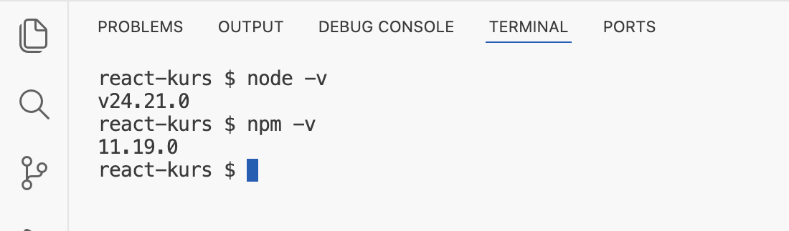
Так должен выглядеть терминал: Node.js 24.21.0 и npm 11.19.0
Если вместо номера версии появилось «Невозможно загрузить файл C:\Program Files\nodejs\npm.ps1, так как выполнение сценариев отключено в этой системе», PowerShell запрещает запуск сценариев, а npm запускается сценарием. Выполните в том же терминале команду ниже, ответьте Y и повторите npm -v.
Set-ExecutionPolicy -Scope CurrentUser RemoteSigned
Ключ -v (от слова version) просит программу назвать свою версию и завершиться. Слева от каждой команды терминал показывает имя текущей папки — react-kurs, справа от знака $ — набранную команду. Первая команда вывела v24.21.0: Node.js установлен и терминал его находит. Вторая вывела 11.19.0: вместе с Node.js установился npm. На Windows в PowerShell строка слева выглядит иначе, а ответы команд те же.
Node.js установлен. Следующая программа — npm — установилась вместе с ним, и с ней студент работает на каждом занятии.
§3npm и файл package.json
Для пирога нужен рецепт со списком продуктов: «мука — около килограмма, яйца — 3 штуки». По списку продукты покупают в магазине и складывают в кладовую. После похода в магазин остаётся чек, где записано, какие продукты куплены: марка муки, дата, вес. По чеку можно купить в точности то же самое ещё раз.
Продукты в кладовой расходуются, а библиотеки в проекте лежат, пока их не удалят, и используются при каждом запуске.
Пакет — библиотека или программа, опубликованная в общем хранилище, чтобы ею могли пользоваться другие. Пакетами распространяются React, Vite и TypeScript. Общее хранилище называется реестром npm (npmjs.com), в нём миллионы пакетов. npm (Node Package Manager) — программа, которая скачивает пакеты из реестра в проект и запускает команды проекта.
Список пакетов, которые нужны проекту, хранится в файле package.json в корне проекта — это рецепт из сравнения. Скачанные пакеты npm складывает в папку node_modules — это кладовая. Точные версии всех скачанных пакетов записываются в файл package-lock.json — это чек. Ниже файл package.json проекта, который будет создан в §4. Создавать его вручную не нужно: его запишет генератор. Здесь он показан заранее, чтобы при создании проекта было понятно, что появилось в папке.
{
"name": "zayavki",
"private": true,
"version": "0.0.0",
"type": "module",
"scripts": {
"dev": "vite",
"build": "tsc -b && vite build",
"lint": "oxlint",
"preview": "vite preview"
},
"dependencies": {
"react": "^19.2.8",
"react-dom": "^19.2.8"
},
"devDependencies": {
"@types/node": "^24.13.3",
"@types/react": "^19.2.18",
"@types/react-dom": "^19.2.7",
"@vitejs/plugin-react": "^6.1.1",
"oxlint": "^1.81.0",
"typescript": "~6.0.2",
"vite": "^8.3.0"
}
}
Файл записан в формате JSON: пары «ключ: значение» в фигурных скобках, ключи и строки в двойных кавычках. Поля разобраны по порядку.
"name"— имя проекта, совпадает с именем папки."private": trueзапрещает случайно опубликовать проект в реестр npm."version"— версия самого проекта, для сайта она не используется."type": "module"— файлы JavaScript в проекте используют записьimport … from …для подключения других файлов. Эта запись встретится в §6."scripts"— команды проекта с короткими именами. Командаnpm run devнаходит здесь имяdevи выполняет записанную справа строкуvite. Так же работаютnpm run build(собрать проект для публикации: сначала проверить типы командойtsc -b, затем собратьvite build; знак&&означает «вторую команду выполнить, только если первая прошла без ошибок»),npm run lint(проверить код линтером) иnpm run preview(посмотреть собранную версию)."dependencies"— пакеты, которые попадут в готовый сайт. Здесь их два:react— сама библиотека компонентов, иreact-dom— часть React, которая выводит компоненты на страницу браузера."devDependencies"— пакеты, которые нужны только при разработке: сборщикvite, его дополнение для React@vitejs/plugin-react, компиляторtypescript, линтерoxlintи описания типов@types/…, по которым редактор подсказывает названия функций React. В готовый сайт они не попадают.
Знаки перед номерами версий задают, какие версии npm может скачать. Номер версии состоит из трёх чисел: 19.2.8 — главная версия 19, дополнительная 2, исправление 8. Знак ^ разрешает новые дополнительные версии и исправления той же главной версии: для ^19.2.8 подойдёт 19.3.0, а 20.0.0 — нет. Знак ~ разрешает только исправления: для ~6.0.2 подойдёт 6.0.5, а 6.1.0 — нет. Главная версия меняется, когда в пакете появляются несовместимые изменения, поэтому её npm сам не повышает.
Проект создаётся командой npm create. Она скачивает пакет-генератор, запускает его один раз и в проект не добавляет. Генератор задаёт несколько вопросов и создаёт папку с готовыми файлами. Для проектов на Vite генератор называется create-vite.
§4Создание проекта на Vite
Vite (читается «вит», от французского «быстро») — инструмент, который делает две вещи. Во время разработки он работает как сервер: раздаёт файлы проекта браузеру, на лету переводит TypeScript и JSX в JavaScript и обновляет страницу при сохранении файла. Перед публикацией он собирает проект в несколько готовых файлов, которые можно положить на любой хостинг. Документация React называет Vite первым среди инструментов для создания приложения без готовой надстройки вроде Next.js и приводит ту же команду создания проекта, что и эта глава.
Проект создаётся одной командой в терминале VS Code. Перед вводом проверьте, что терминал открыт в папке react-kurs: слева от курсора написано react-kurs $ (на Windows строка заканчивается на \react-kurs>). Наберите команду и нажмите Enter:
npm create vite@latest zayavki -- --template react-ts
Команда состоит из пяти частей:
npm create vite— запустить генераторcreate-vite; словоcreate-в имени пакета npm подставляет сам;@latest— взять последнюю версию генератора, даже если на компьютере осталась более старая;zayavki— имя папки нового проекта; имя пишется латиницей, без пробелов и заглавных букв, потому что оно станет именем пакета вpackage.json;--— разделитель: всё, что после него, npm передаёт генератору без изменений;--template react-ts— шаблон «React и TypeScript». Без этого ключа генератор спросит фреймворк и вариант списком.
- Разрешите скачать генератор
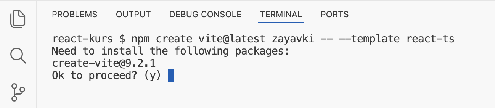
Первый запуск: npm спрашивает разрешение скачать create-vite 9.2.1 Генератора ещё нет на компьютере, и npm спрашивает, можно ли его скачать:
Need to install the following packages: create-vite@9.2.1 · Ok to proceed? (y). Буква(y)в скобках — ответ по умолчанию. Нажмите y и Enter. При следующих запусках этот вопрос не появится: генератор останется в кэше npm. - Выберите линтер
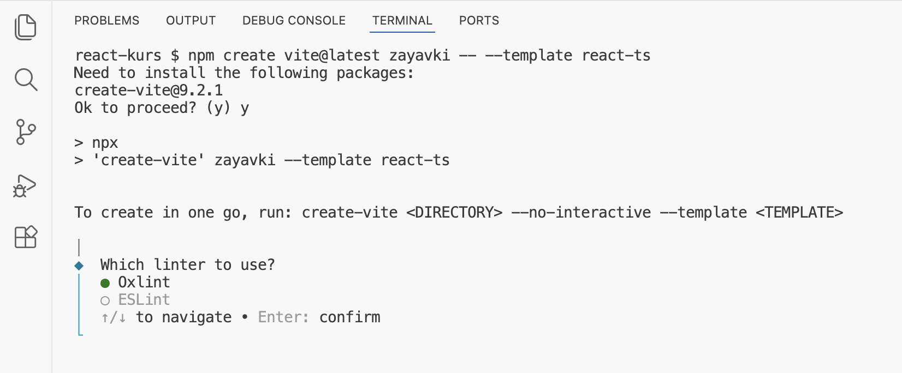
Вопрос генератора о линтере: выбран Oxlint Генератор показал, какие команды он выполнил (строки со знаком
>), подсказку, как создать проект без вопросов, и задал первый вопрос:Which linter to use?— какой линтер подключить. Линтер — программа, которая читает код без запуска и сообщает о подозрительных местах: неиспользуемых переменных, нарушениях правил React. Варианты переключаются стрелками ↑ ↓, выбранный отмечен зелёным кружком. Оставьте Oxlint и нажмите Enter: он предложен по умолчанию и работает быстрее ESLint, а шаблон подключает в обоих одни и те же правила React — проверку хуков и проверку экспорта компонентов. - Откажитесь от автоматической установки
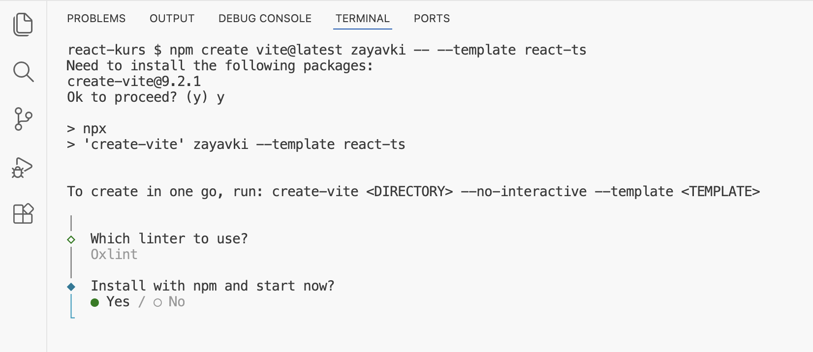
Второй вопрос: установить пакеты и сразу запустить проект Ответ на первый вопрос записан серым под ним:
Oxlint. Второй вопрос —Install with npm and start now?: установить пакеты и сразу запустить проект. По умолчанию выбрано Yes. В этой главе выберите No стрелкой → и нажмите Enter: установка и запуск будут выполнены отдельными командами, чтобы было видно, что делает каждая. В следующих проектах можно отвечать Yes. - Прочитайте итог
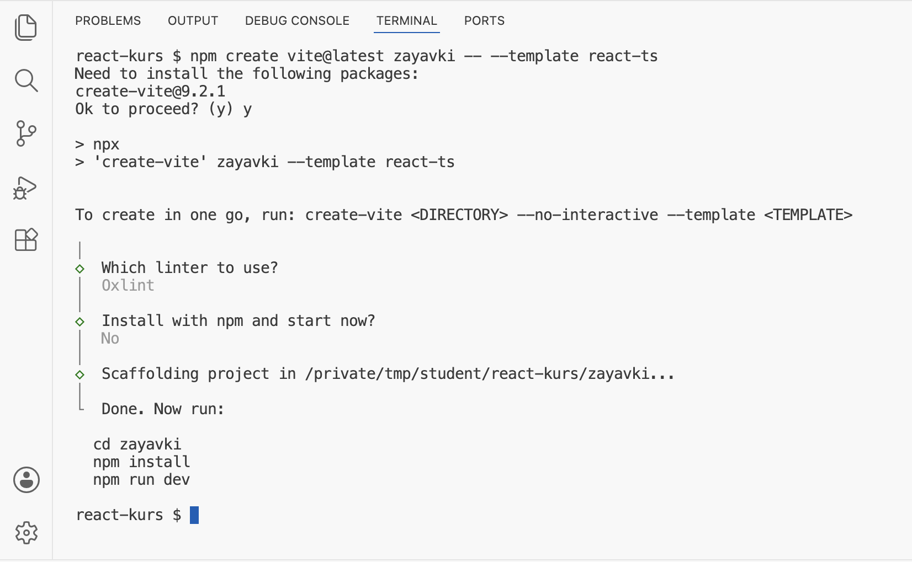
Проект создан: генератор подсказывает три следующие команды Строка
Scaffolding project in …/react-kurs/zayavki...сообщает, где создана папка (scaffolding — «возведение лесов», то есть создание каркаса). Ниже генератор перечисляет три команды, которые нужно выполнить дальше: перейти в папку проекта, установить пакеты, запустить сервер. Им посвящён следующий раздел. В проводнике VS Code под заголовком REACT-KURS появилась папкаzayavki.
§5Установка зависимостей и запуск
Генератор создал файлы проекта, но не скачал пакеты: в папке zayavki есть package.json, но нет node_modules. Первые две команды переходят в папку проекта и скачивают всё, что перечислено в package.json:
cd zayavki npm install
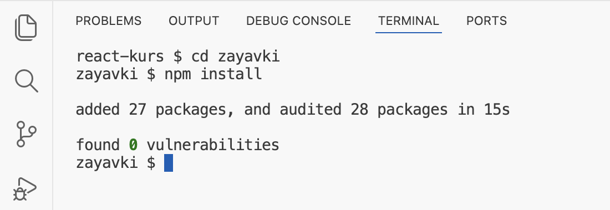
Команда cd (change directory) меняет текущую папку терминала: имя слева от $ сменилось с react-kurs на zayavki. Все следующие команды выполняются в папке проекта — там, где лежит package.json. Команда npm install прочитала package.json, скачала пакеты в папку node_modules и записала точные версии в package-lock.json. Строка added 27 packages, and audited 28 packages in 15s означает: добавлено 27 пакетов (в package.json их 9, остальные — пакеты, от которых зависят эти девять), проверено 28 (вместе с самим проектом), ушло 15 секунд; на другом компьютере и при другой скорости интернета время будет другим. Строка found 0 vulnerabilities — результат проверки пакетов по базе известных уязвимостей.
Теперь можно запустить сервер разработки:
npm run dev
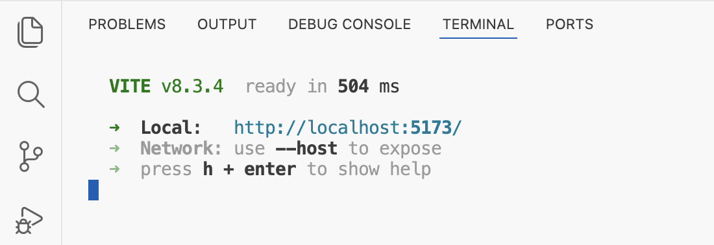
npm нашёл в package.json команду dev и запустил vite. Первая строка — версия Vite и время запуска: VITE v8.3.4 ready in 504 ms. Строка Local: http://localhost:5173/ — адрес, по которому проект открывается в браузере. localhost означает «этот же компьютер», а 5173 — номер порта, то есть номер «двери», через которую Vite принимает запросы; программ, принимающих запросы, на компьютере может быть несколько, и у каждой свой порт. Строка Network: use --host to expose сообщает, что с других устройств сайт пока не открыть. Последняя строка подсказывает, что сочетание h и Enter покажет справку.
Пока Vite запущен, терминал занят и новые команды в нём не выполняются. Остановить сервер — Ctrl+C в этом терминале. Для других команд откройте второй терминал кнопкой + на панели терминала.
Откройте адрес http://localhost:5173/ в браузере: щелчок по ссылке в терминале с зажатой клавишей Ctrl (на macOS — ⌘) или ввод адреса вручную.
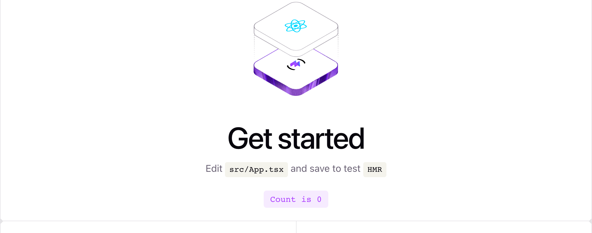
Это стартовая страница шаблона. Под заголовком Get started шаблон подсказывает: Edit src/App.tsx and save to test HMR — измените файл src/App.tsx, сохраните и проверьте HMR. Что такое HMR, разобрано в §7. Кнопка Count is 0 — счётчик: каждое нажатие увеличивает число на единицу. Ниже идут ссылки на документацию Vite и React и на сообщества разработчиков Vite.
Страница на экране собрана из нескольких файлов проекта. Следующий раздел показывает, из каких и в каком порядке.
§6Из чего состоит проект
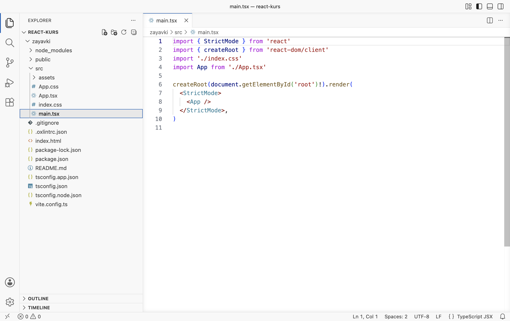
Слева на снимке — проводник VS Code с деревом проекта, справа открыт файл src/main.tsx. Файлы в корне проекта настраивают инструменты, а код приложения лежит в папке src. Ниже все файлы с пояснениями; выделены те, с которыми студент работает в модуле 1.
zayavki · файлы проекта
Из всех файлов браузер в первую очередь получает index.html. С него начинается цепочка, которая приводит к компоненту на экране. Ниже она разобрана по звеньям.
Звено 1: index.html
<!doctype html> <html lang="en"> <head> <meta charset="UTF-8" /> <link rel="icon" type="image/svg+xml" href="/favicon.svg" /> <meta name="viewport" content="width=device-width, initial-scale=1.0" /> <title>zayavki</title> </head> <body> <div id="root"></div> <script type="module" src="/src/main.tsx"></script> </body> </html>
В голове страницы (<head>) — кодировка, значок вкладки, настройка для телефонов (viewport) и заголовок вкладки zayavki. Тело страницы (<body>) содержит две строки, от которых зависит работа React. Первая — пустой блок <div id="root"></div>. Атрибут id даёт элементу уникальное имя root (корень), по которому его найдёт код. Всё, что React нарисует, окажется внутри этого блока. Вторая строка подключает скрипт /src/main.tsx. Атрибут type="module" разрешает в скрипте запись import, то есть подключение других файлов. Браузер не выполняет TypeScript и JSX, поэтому, когда он запрашивает main.tsx, Vite переводит файл в JavaScript и отдаёт уже готовый код.
Звено 2: main.tsx
import { StrictMode } from 'react' import { createRoot } from 'react-dom/client' import './index.css' import App from './App.tsx' createRoot(document.getElementById('root')!).render( <StrictMode> <App /> </StrictMode>, )
Файл из десяти строк связывает HTML-страницу с React. Первые четыре строки подключают то, что понадобится, оператором import:
import { StrictMode } from 'react'— взять из пакетаreactкомпонентStrictMode. Фигурные скобки означают, что из пакета берётся одна именованная часть. Имя без пути ('react') npm ищет в папкеnode_modules.import { createRoot } from 'react-dom/client'— взять функциюcreateRootиз части пакетаreact-dom, предназначенной для браузера.import './index.css'— подключить файл стилей. Путь начинается с./— «из этой же папки». Из файла ничего не берётся по имени: Vite добавит его стили на страницу.import App from './App.tsx'— взять компонентAppиз соседнего файла. Скобок нет, потому чтоApp.tsxотдаёт компонент как главную часть файла (в концеApp.tsxстоитexport default App).
Строка 6 выполняет основную работу, и её удобнее читать по частям изнутри наружу. document.getElementById('root') находит на странице элемент с именем root — пустой блок из index.html. Восклицательный знак после скобки — запись TypeScript: она сообщает проверке типов, что элемент точно существует. Без него TypeScript предупредил бы, что функция может вернуть «ничего», если элемента нет. createRoot(…) создаёт в этом блоке корень React — место, которым React управляет сам. Метод .render(…) выводит в корень то, что передано в скобках.
Внутри render записан JSX — разметка внутри кода (глава 0.1). <App /> означает «вывести компонент App»; косая черта перед закрывающей скобкой ставится, когда у элемента нет содержимого. Обёртка <StrictMode> — строгий режим: во время разработки React специально выполняет некоторые действия дважды и выводит предупреждения, чтобы раньше найти ошибки. На опубликованный сайт строгий режим не влияет.
Путь от адреса в браузере до компонента на экране
Так устроен каждый проект, созданный шаблоном Vite для React: одна HTML-страница с пустым блоком, точка входа main.tsx и дерево компонентов с корнем App. Работа над приложением идёт в App и компонентах внутри него.
Звено 3: App.tsx
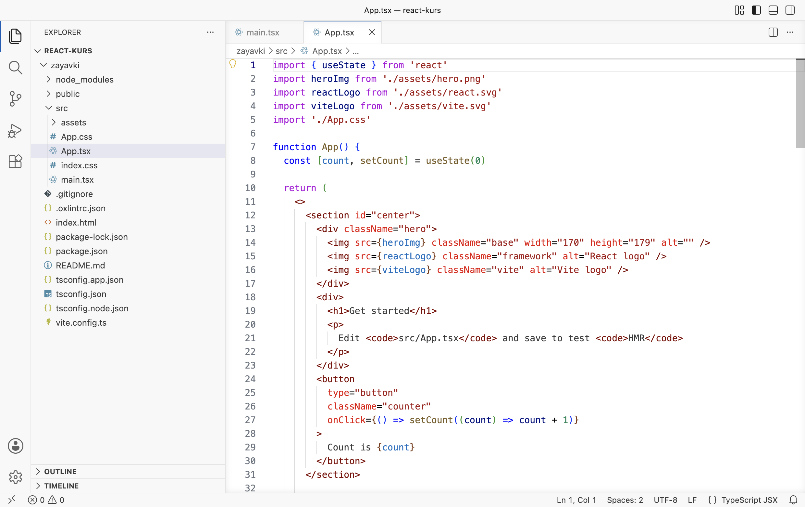
Файл App.tsx содержит компонент — функцию App, которая возвращает разметку страницы. В строке 8 создаётся состояние счётчика count, в строках 24–30 описана кнопка, нажатие которой увеличивает счётчик. Состояние и события подробно разбираются в главе 1.4; в этой главе достаточно увидеть, что всё содержимое стартовой страницы — заголовок, картинки, кнопка — записано в одном этом файле. Из него же в §8 будет сделана заготовка доски заявок.
§7Живое обновление страницы
Если в спектакле нужно заменить декорацию, можно остановить представление, отправить зрителей в фойе и начать заново с первого акта. А можно заменить декорацию во время смены сцены: актёры продолжают с того же места, зрители ничего не теряют.
Декорации меняют люди за кулисами, а здесь замену выполняют Vite и React, и занимает она доли секунды.
HMR (Hot Module Replacement — горячая замена модулей) — способ обновить изменённый файл на открытой странице без её перезагрузки. Когда файл сохранён, Vite замечает изменение, переводит только этот файл и отправляет его в браузер. React заменяет старую версию компонента новой и сохраняет его состояние. Поэтому, если на странице что-то было введено или нажато, после правки это остаётся на месте.
Проверить HMR можно на счётчике шаблона. Сервер должен быть запущен (§5), а страница localhost:5173 — открыта в браузере.
- Нажмите счётчик три раза
На странице нажмите кнопку Count is 0 три раза. На ней появится Count is 3.
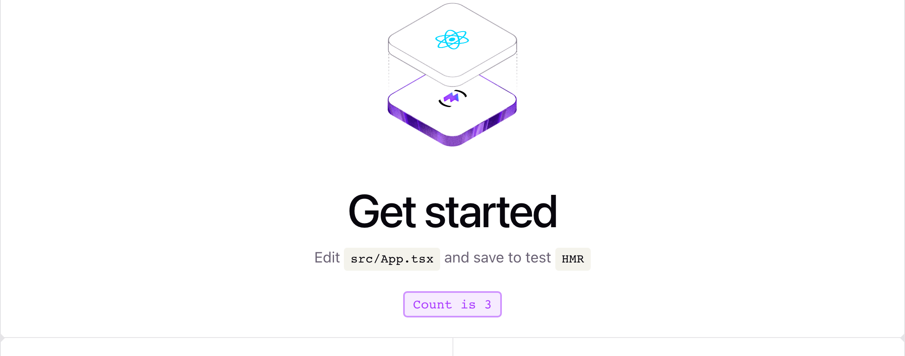
До правки: заголовок Get started, на счётчике 3 после трёх нажатий - Откройте файл App.tsx
В проводнике VS Code раскройте
zayavki→srcи щёлкните поApp.tsx. Файл откроется справа, слева от кода — номера строк. - Измените строку 19
Найдите строку 19 по номеру слева или перейдите к ней сочетанием Ctrl+G (на macOS ⌃+G), введите
19и Enter. Замените текст между тегами<h1>и</h1>; сами теги не трогайте:src/App.tsx · строка 19 было: <h1>Get started</h1> стало: <h1>Доска заявок</h1>
- Сохраните файл
Нажмите Ctrl+S (на macOS ⌘+S). Пока файл не сохранён, на его вкладке вместо крестика стоит белая точка; после сохранения точка исчезает.
Так должен выглядеть файл после правки: в строке 19 текст «Доска заявок» - Посмотрите на страницу, не обновляя её
Вернитесь в браузер. Обновлять страницу не нужно.
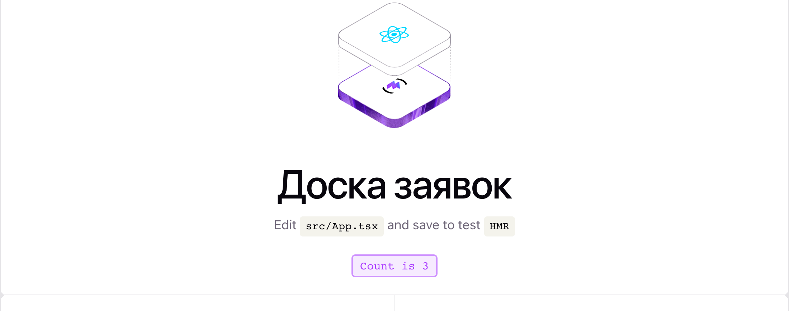
Так должна выглядеть страница: заголовок сменился, на счётчике осталось 3
Заголовок на странице сменился через мгновение после сохранения, и кнопка по-прежнему показывает Count is 3. Если бы страница перезагрузилась, счётчик начал бы с нуля: состояние хранится в памяти браузера и при перезагрузке теряется. По сохранённому числу видно, что сработала горячая замена. При работе с формами это значит, что заполненную форму после правки кода не нужно заполнять заново.
Если правка затрагивает то, что React не может заменить на месте (например, изменён файл main.tsx или vite.config.ts), Vite перезагружает страницу целиком или просит перезапустить сервер. Если страница перестала обновляться, остановите сервер (Ctrl+C), запустите npm run dev снова и обновите страницу в браузере.
§8Заготовка проекта «Доска заявок»
Стартовая страница шаблона нужна только для проверки, что всё работает. Для проекта модуля 1 из шаблона убирается всё лишнее, и остаётся пустая страница с заголовком. Сервер можно не останавливать: изменения будут видны сразу. Сначала заменяется App.tsx, и только потом удаляются файлы, которые он подключал; что будет при обратном порядке, описано в блоке после шагов.
- Замените содержимое App.tsx
Откройте
src/App.tsx, выделите весь текст (Ctrl+A, на macOS ⌘+A) и удалите его. Скопируйте код ниже кнопкой «копировать» в шапке блока, вставьте в пустой файл (Ctrl+V) и сохраните (Ctrl+S). В файле должно получиться 10 строк.zayavki/src/App.tsx function App() { return ( <main> <h1>Доска заявок</h1> <p>Здесь появятся форма заявки и список карточек.</p> </main> ) } export default App
- Замените содержимое index.css
Так же откройте
src/index.css, выделите и удалите весь текст, вставьте код ниже и сохраните.zayavki/src/index.css :root { font-family: system-ui, 'Segoe UI', Roboto, sans-serif; color: #1f2430; background: #f6f7f9; } body { margin: 0; } main { max-width: 960px; margin: 0 auto; padding: 32px 20px; } - Удалите лишние файлы
В проводнике щёлкните правой кнопкой по файлу
src/App.css→ Delete и подтвердите. Так же удалите папкуsrc/assets. НовыйApp.tsxэти файлы уже не подключает, поэтому после удаления ошибок не появится. - Проверьте результат
В папке
srcдолжны остаться три файла:App.tsx,index.css,main.tsx(первый кадр ниже). В браузере — заголовок «Доска заявок» и строка под ним; если страница не обновилась сама, нажмите F5. В терминале не должно быть красных строк.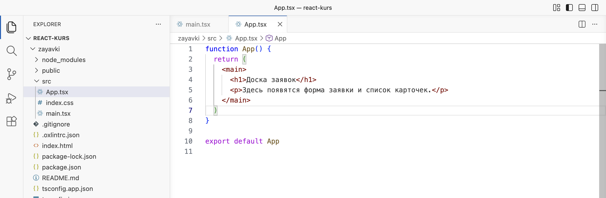
Заготовка: в папке src остались три файла, App.tsx сокращён до десяти строк 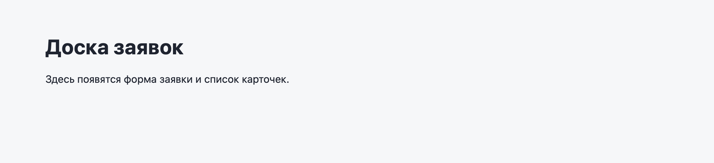
Страница заготовки по адресу localhost:5173
Старый App.tsx подключает ./App.css и картинки из assets. Если удалить их первыми, в терминале и на странице появится ошибка Failed to resolve import "./App.css" from "src/App.tsx". Does the file exist? — «не удалось найти подключаемый файл». Ошибка исчезнет, как только будет сохранён новый App.tsx из шага 1.
В новом App.tsx осталось только то, что нужно любому компоненту. function App() { … } объявляет функцию с именем App; имя компонента всегда пишется с заглавной буквы, иначе React примет <app /> за обычный тег HTML. Внутри функции return ( … ) возвращает разметку: тег <main> — основная часть страницы, в нём заголовок и абзац. Круглые скобки вокруг разметки позволяют записать её на нескольких строках. Последняя строка export default App отдаёт компонент наружу — его берёт import App from './App.tsx' в main.tsx.
В index.css три правила. Правило :root задаёт для всей страницы шрифт (первый доступный из списка: системный, Segoe UI на Windows, Roboto на Android), цвет текста и цвет фона. Правило body убирает отступ, который браузер по умолчанию ставит вокруг страницы. Правило main ограничивает ширину содержимого 960 пикселями, ставит его по центру (margin: 0 auto) и даёт внутренние отступы: 32 пикселя сверху и снизу, 20 — слева и справа.
С этой заготовки начинается глава 1.2: в ней доска заявок разбивается на компоненты — шапку, форму и карточку.
Как вернуться к проекту на следующем занятии
Сервер разработки работает, только пока открыт терминал. На следующем занятии проект запускается так:
- Откройте папку react-kurs в VS Code
Меню File → Open Recent →
react-kurs, или File → Open Folder…, как в §2. - Откройте терминал и перейдите в папку проекта
Терминал · папка react-kurs cd zayavki
- Запустите сервер
Терминал · папка zayavki npm run dev
Команду
npm installповторять не нужно: пакеты уже лежат вnode_modules. Её выполняют заново, только если проект скачан на другой компьютер или вpackage.jsonдобавлен пакет. - Откройте адрес из терминала
http://localhost:5173/— на странице должна быть заготовка доски заявок.
§9Частые ошибки
| Что видно | Почему | Что сделать |
|---|---|---|
node: command not found или «"node" не является внутренней или внешней командой» | Node.js не установлен или терминал открыт до установки, и в нём прежний список папок с программами | Закрыть VS Code полностью и открыть снова. Если не помогло — переустановить Node.js, не снимая флажок Add to PATH |
| В PowerShell: «Невозможно загрузить файл C:\Program Files\nodejs\npm.ps1, так как выполнение сценариев отключено в этой системе» | В Windows по умолчанию запрещено выполнять сценарии PowerShell, а npm запускается через такой сценарий | Выполнить один раз Set-ExecutionPolicy -Scope CurrentUser RemoteSigned и ответить Y, либо выбрать в терминале VS Code профиль Command Prompt |
npm error enoent Could not read package.json | Команда выполнена не в папке проекта: в текущей папке нет package.json | Перейти в папку проекта: cd zayavki. Имя слева от $ должно быть zayavki |
sh: vite: command not found или «"vite" не является внутренней или внешней командой» | Пакеты не установлены: нет папки node_modules | Выполнить npm install в папке проекта, затем npm run dev |
Port 5173 is in use, trying another one... | Порт занят другим запущенным сервером, чаще всего забытым Vite во втором терминале | Открыть адрес, который Vite напечатал ниже (например, localhost:5174), или остановить старый сервер Ctrl+C |
You are using Node.js 18.x. Vite requires Node.js version 20.19+ or 22.12+ | Установлена старая версия Node.js | Установить LTS-версию 24 по §2 и проверить node -v |
| Страница не меняется после правки | Файл не сохранён (на вкладке редактора точка вместо крестика) или сервер остановлен | Сохранить файл Ctrl+S; проверить, что в терминале работает npm run dev |
§10Проверьте себя
Нужен ли Node.js на компьютере человека, который откроет готовую доску заявок в браузере?
Нет. Node.js нужен разработчику, чтобы работали инструменты: npm и Vite. Пользователь получает готовые HTML, CSS и JavaScript, которые выполняет браузер.
Чем отличаются файлы package.json и package-lock.json и папка node_modules?
package.json — список нужных пакетов с допустимыми диапазонами версий и команды проекта. package-lock.json — точные версии всех установленных пакетов, включая пакеты, от которых они зависят. node_modules — сами скачанные пакеты; эту папку создаёт npm install, и её можно удалить и восстановить той же командой.
В package.json записано "vite": "^8.3.0". Какие из версий 8.3.4, 8.5.0 и 9.0.0 может установить npm?
8.3.4 и 8.5.0: знак ^ разрешает новые дополнительные версии и исправления в пределах главной версии 8. Версию 9.0.0 npm сам не поставит: смена главной версии означает несовместимые изменения.
Что делает команда npm run dev и где npm берёт команду для запуска?
npm ищет в разделе "scripts" файла package.json команду с именем dev и выполняет записанную для неё строку — vite. Vite запускает сервер разработки по адресу http://localhost:5173/.
Почему после правки заголовка на счётчике осталось 3, а не 0?
Сработала горячая замена (HMR): Vite отправил в браузер только изменённый файл, React заменил компонент и сохранил его состояние. Страница не перезагружалась, поэтому состояние счётчика не потерялось.
Что произойдёт, если в index.html переименовать id="root" в id="app", а main.tsx не менять?
document.getElementById('root') ничего не найдёт и вернёт «ничего» (null). createRoot получит пустое значение, в браузере появится ошибка, и страница останется пустой. Восклицательный знак в main.tsx скрывает это предупреждение от TypeScript, но ошибку не исправляет: имя в двух файлах должно совпадать.
Шпаргалка
node -vnpm -vnpm create vite@latest zayavki -- --template react-tscd zayavkinpm installnpm run devCtrl+Cindex.html → main.tsx → App.tsxsrc/App.tsxsrc/index.cssИтог главы
Node.js выполняет JavaScript на компьютере разработчика и нужен для инструментов: npm скачивает пакеты по списку из package.json в папку node_modules, Vite раздаёт проект браузеру и собирает его для публикации. Проект создаётся командой npm create vite@latest zayavki -- --template react-ts, пакеты ставятся командой npm install, сервер разработки запускается командой npm run dev и работает по адресу localhost:5173. Браузер получает index.html с пустым блоком root, файл main.tsx выводит в этот блок компонент App. При сохранении файла Vite и React заменяют изменённый компонент без перезагрузки страницы и сохраняют его состояние. Проект zayavki очищен от шаблона и готов к главе 1.2.
Источники
- nodejs.org — Download Node.js
- nodejs.org — Node.js Releases: график LTS-версий
- vite.dev — Getting Started
- react.dev — Build a React app from Scratch
- docs.npmjs.com — package.json
- docs.npmjs.com — About semantic versioning